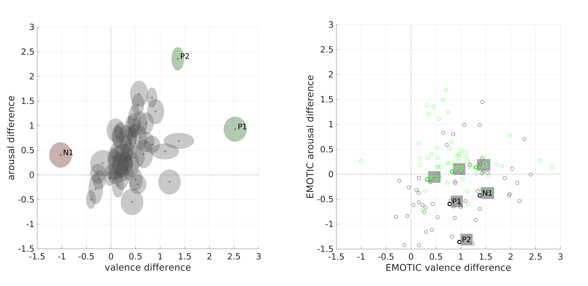

Different mechanism between Convolutional Neural Networks and Humans in Emotional Recognition
Published paper at 24th ACM International Conference on Multimodal Interaction (ICMI) Workshop
Can Deep Neural Network utilize contextual information to infer emotions as human does?
ROLE
1) Tested pre-trained DNN model on our dataset
2) Data analysis among human behavior result, CNN model 1(trained on context dataset),and CNN model 2(trained on AffectNet)
3) Paper writing
SKILLS UTILIZED
Coding(python)
Purpose of this project
Deep Neural Networks(DNNs) show similar performance levels to humans in the emotional recognition of face images. Not only is the accuracy of DNNs' performance similar, but the focusing location is also akin to humans' performance. Several studies have discovered this by comparing the locations where humans concentrate on inferring emotions (using eye tracking) and where DNNs do (using GradCam).
This study compared two types of DNN models and human behavior experiment results. One of the two models was pre-trained using images including context (i.e., facial expressions, body cues, background information), while the other was pre-trained only on facial expression images. Hence, the former model captures complete information in the provided static images to infer emotions, while the latter infers emotions based on facial expressions.
DNNs
| Computational models | ||||||
|---|---|---|---|---|---|---|
| Baseline | Epochs | Optimizer | Learning Rate | Batch size | Loss function | |
| EMOTIC | ResNet-18 AlexNet |
15 | Adam | 0.01 | 52 | Smooth L1 (Dimensional emotion) Weighted Euclidean loss (Discrete emotion) |
| ResNet trained on re-labeled AffectNet dataset | ResNet-50 | 50 | Adam | 0.0001 | 64 | cross-entropy loss |
Experiment
Dataset
The dataset included three types of images: full-context images (images with complete information, face, body, and scene); context blurred images (images with face and body); and face-only images (images cropped to exclude all information except the face).
Method
Since ResNet was trained on AffectNet (face images), we tested this model on a face-only image dataset. Meanwhile, we tested full-context and context-blurred image types with the EMOTIC model. As such, we compared the results of two model types to those of human behavior experiments (baseline) to examine how differently DNNs infer human emotions from how humans do.
Result
Discrete emotion
We discovered that the EMOTIC (context capture model) successfully classified images' emotions in both full-context and context-blurred stimuli. We learned from human behavior experiments that humans perceive full-context images more intensely. For instance, when happiness emotion was given as two types of images (full-context and context-blurred), humans perceived happiness emotion in full-context images more valence-positively than in context-blurred images. Likewise, the EMOTIC model inferred full-context images as positive-valence-related emotions (from affection to sympathy) and blurred-context images as negative-valence emotions (from anger to yearning).
Dimensional emotion

Fig. 2. Subtraction of each image ratings (from full-context images to face+body images). Left: human evaluation. Right: computational model (EMOTIC) rating. Black circles are the differences between full-context and face+body images, green circles are the differences between full-context and face-only images.
Even though the model showed an outstanding result in categorical emotion inference, it failed to produce a result akin to performance at the human level in dimensional emotions. As demonstrated in Figure 2, the images that showed the most differences in the two dimensions in human ratings were not the ones showing the most differences in computational model ratings. Instead, these images were located in the center of the computational model's scatter plot, meaning the most influential contexts for humans were considered the least influential contexts for the computational model.